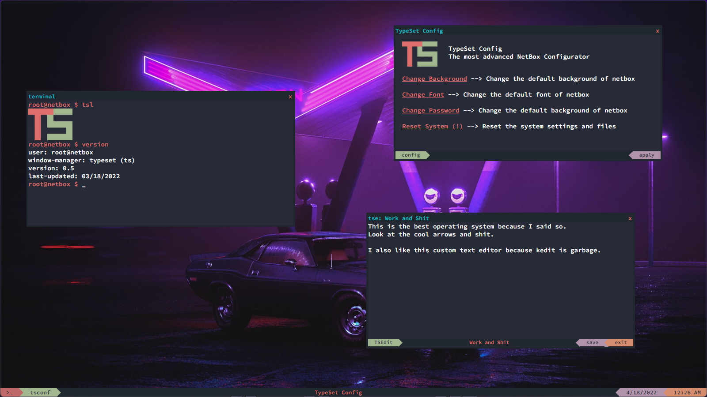

Brody King
Brody King
Kimmu Alternative that is very buggy
/projects/netbox/
Last modified on April 18, 2022
Netbox is a Operating System made with JavaScript. It is compiled in real time when the browser opens the page It is a very easy operating system to develop apps with and is a very fun project to work on if you are bored.
